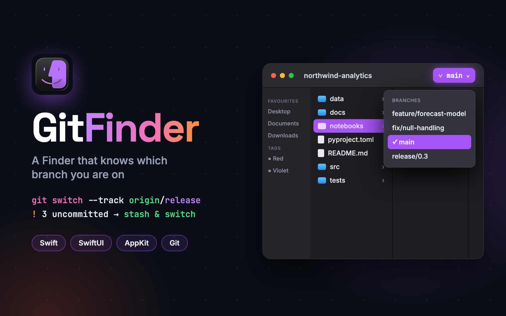
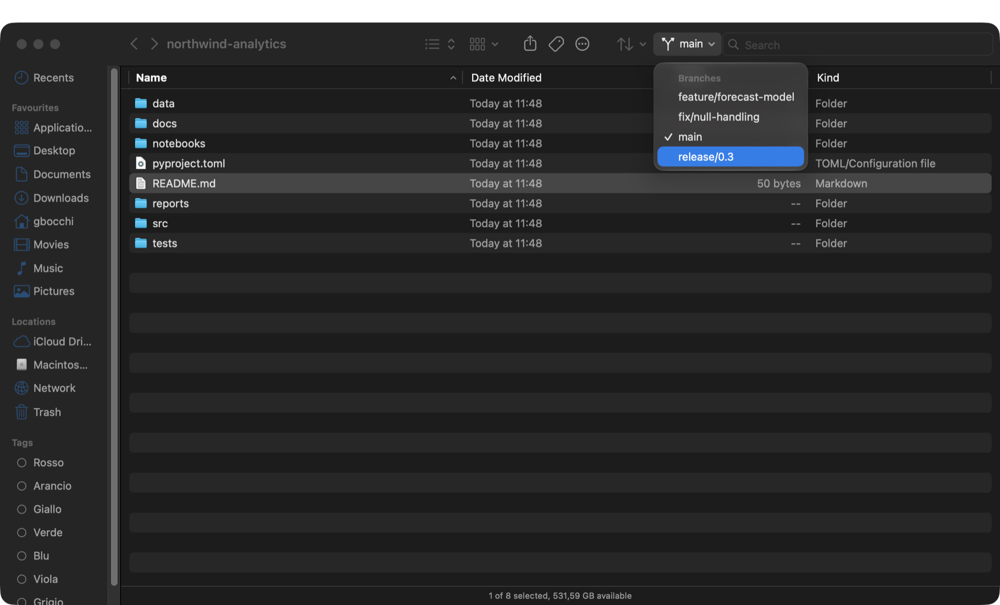
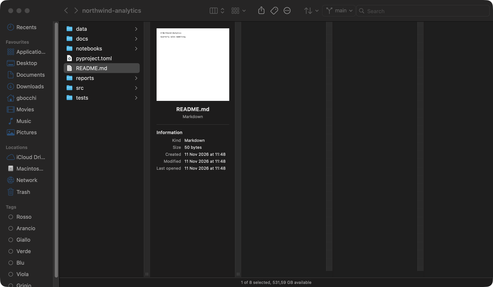

A native macOS file browser that looks and behaves like the Finder and adds a branch button: when the folder you are in lives inside a Git repository, you can see and switch its branch without leaving the window.
GitFinder is a file browser for macOS built around the Finder's own habits: the same four views, tabs, Quick Look, tags, smart folders and keyboard shortcuts, with one addition the Finder never had.
When the folder on screen belongs to a Git repository, a button in the toolbar names the checked-out branch. Its menu lists the local branches and the remote ones that have no local copy yet, and picking one switches the whole repository. For people who move between a project's files and its branches all day, the two things finally live in the same place.
Behave like the Finder wherever it can, and treat the user's files with the same care: nothing is overwritten, and a branch switch that could lose work always asks first.

The button shows the current branch, or the short commit hash when the repository is on a detached commit. Choosing a remote branch creates a local one that tracks it. Outside a repository the button simply disappears, and changes made elsewhere, in a terminal or another window, show up as soon as the window becomes active again.
If uncommitted changes would be in the way, GitFinder stops and asks. They can be stashed and the switch completed, the switch can be cancelled, or, after a second confirmation, the changes can be discarded. Any other Git error is shown exactly as Git reported it.
Icons, list, columns and gallery are one shortcut apart, and each folder remembers the view it was last shown in, together with its sort order, grouping and display options. The column view adds a preview column with file details; the gallery view pairs a large preview with a thumbnail strip.
All four share a single selection, so what is selected stays selected when the view changes. Tabs, a path bar, back and forward history, Go to Folder with path completion and a Spotlight search scoped to the current folder complete the picture.

The project is split in two. A UI-free core holds everything that can be tested without a window: directory loading, file operations and transfers, the Git service and branch-switch policy, tag storage, smart-folder parsing and per-folder settings. It is covered by more than 330 unit tests that use real temporary files and real Git repositories rather than mocks. A thin SwiftUI and AppKit layer sits on top, with one controller per window or tab, and uses AppKit where SwiftUI falls short: Quick Look, drag and drop, the column browser and keyboard handling.
Git is reached through the command-line tool, with hardened arguments and a clean environment, so that merely browsing an untrusted repository cannot run its configuration. Saved searches are read as data by a bounded parser, and slow work such as large copies stays off the main thread so the window never freezes.
Language of the whole app, with a core package kept separate from the interface.
Sidebar, toolbar, list, icon and gallery views, sheets and menus.
Column browser, Quick Look, drag and drop and keyboard handling.
Branch listing and switching, run with hardened, read-only arguments for queries.
Builds the two targets and runs the test suite, with a script that packages the app.